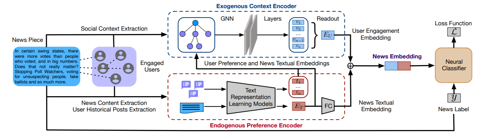

UPFD
Introduction
Title: User Preference-aware Fake News Detection
Authors: Yingtong Dou, Kai Shu, Congying Xia, Philip S. Yu, Lichao Sun
Abstract: Disinformation and fake news have posed detrimental effects on individuals and society in recent years, attracting broad attention to fake news detection. The majority of existing fake news detection algorithms focus on mining news content and/or the surrounding exogenous context for discovering deceptive signals; while the endogenous preference of a user when he/she decides to spread a piece of fake news or not is ignored. The confirmation bias theory has indicated that a user is more likely to spread a piece of fake news when it confirms his/her existing beliefs/preferences. Users’ historical, social engagements such as posts provide rich information about users’ preferences toward news and have great potentials to advance fake news detection. However, the work on exploring user preference for fake news detection is somewhat limited. Therefore, in this paper, we study the novel problem of exploiting user preference for fake news detection. We propose a new framework, UPFD, which simultaneously captures various signals from user preferences by joint content and graph modeling. Experimental results on real-world datasets demonstrate the effectiveness of the proposed framework. We release our code and data as a benchmark for GNN-based fake news detection: https://github.com/safe-graph/GNN-FakeNews.
Running with Faknow
Model Hyper-Parameters:
root (str): Root directory where the dataset should be savedname (str): The name of the graph set ("politifact","gossipcop")feature (str)The node feature type ("profile","spacy","bert","content")If set to
"profile", the 10-dimensional node feature is composed of ten Twitter user profile attributes. If set to"spacy", the 300-dimensional node feature is composed of Twitter user historical tweets encoded by the spaCy word2vec encoder. If set to"bert", the 768-dimensional node feature is composed of Twitter user historical tweets encoded by the bert-as-service. If set to"content", the 310-dimensional node feature is composed of a 300-dimensional “spacy” vector plus a 10-dimensional “profile” vector.
splits (List[str]): dataset split, including ‘train’, ‘val’ and ‘test’.If None, [‘train’, ‘val’, ‘test’] will be used, default =
Nonebase_model (str): base model for UPFD, including ‘sage’, ‘gcn’, ‘gat’, ‘gcnfn’, default ='sage'batch_size (int): batch size, default =128epochs (int): number of epochs, default =75lr (float): learning rate, default =0.01weight_decay (float): weight decay, default =0.01metrics (List): evaluation metrics, if None, [‘accuracy’, ‘precision’, ‘recall’, ‘f1’] is used, default =Nonedevice (str): device, default ='cpu'
A Running Example:
Write the following code to a python file, such as run.py
from faknow.run.social_context import run_upfd
run_upfd(root=, name=, feature=)
And then:
python run.py
If you want to change parameters, dataset or evaluation settings, take a look at